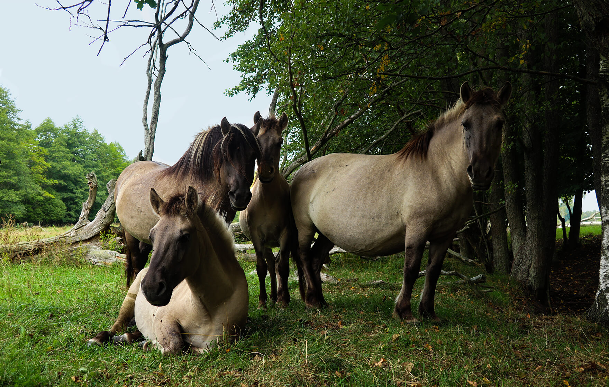
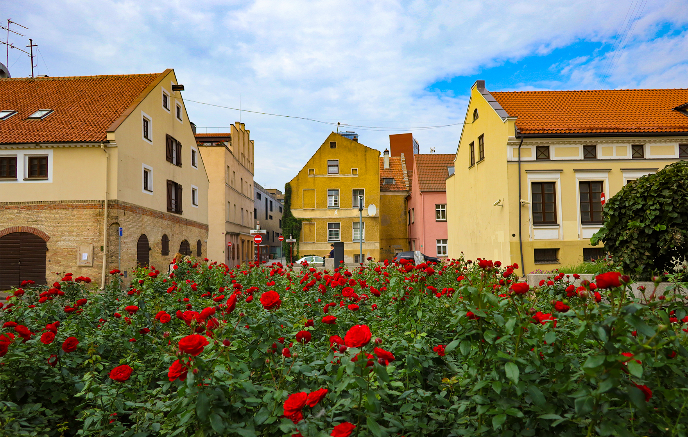

Here’s what you do on the way from Riga to Vilnius:
Walk the Kemeri fog trail
Visit in early
morning to see
fogs
Length of the
trail is 5km
Bogs cover
all the park
Visit seaside promenade
If you have a chance,
wait to see it
during the storm
— take a walk along the South Pier
to see old anchors and lighthouse
Ostas
street, 45
Enjoy Kuldiga atmosphere
Architecture
in Kuldiga dates from
13th century
Baznica
Street 1
Find Remains of the Northern Fort
The fortress was recognized as a strategic mistake and destroyed
— built and abandoned in the beginning of the twentieth century
Jatnieku iela 25, Liepaja
Look at the wild horses

Horses were transferred
in 1999 to protect the
Latvian ecosystem
Pape Nature
Park
Explore Klaipeda

— the most romantic town in Lithuania
Mėsininkų
g 6
Walk along Kaunas old town
The second-largest
city in Lithuania
Visit the Trakai castle
— the only castle in Eastern Europe
built on the island
Galvė lake